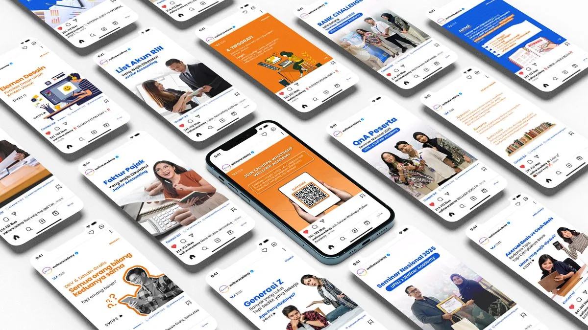

Wellner Academy
Bangun Kehadiran Digital Wellner Academy Melalui Konten Edukasi yang Konsisten
Adsbangda membantu Wellner Academy membangun kehadiran digital melalui strategi Social Media Management yang berfokus pada penyajian konten edukatif, relevan, dan konsisten.
Selama kerja sama berlangsung, kami bertanggung jawab dalam proses perencanaan konten, desain visual, copywriting, hingga publikasi secara berkala untuk membangun kredibilitas brand, meningkatkan engagement, dan memperluas jangkauan audiens di media sosial.
Tentang Proyek
Wellner Academy merupakan platform edukasi yang menghadirkan berbagai materi seputar finansial, perpajakan, akuntansi, hingga desain kreatif untuk membantu masyarakat dan profesional meningkatkan kompetensi mereka.
Untuk mendukung pertumbuhan brand di media sosial, Wellner Academy mempercayakan Adsbangda sebagai partner kreatif dalam mengelola strategi konten secara menyeluruh. Kami memastikan setiap konten diproduksi secara konsisten dengan pendekatan visual yang menarik, informasi yang mudah dipahami, serta tetap relevan dengan kebutuhan audiens.
Melalui strategi tersebut, media sosial Wellner Academy berkembang sebagai kanal edukasi yang aktif, informatif, dan mampu membangun hubungan yang lebih dekat dengan para pengikutnya.
Menghadirkan Konten Edukasi yang Informatif dan Konsisten

Kami mengelola seluruh proses produksi konten media sosial Wellner Academy, mulai dari penyusunan content plan, riset topik, copywriting, desain visual, hingga penjadwalan publikasi. Setiap konten dirancang untuk menyampaikan informasi mengenai finansial, perpajakan, akuntansi, dan desain dengan bahasa yang mudah dipahami serta visual yang menarik sehingga mampu meningkatkan engagement sekaligus memperkuat positioning Wellner Academy sebagai platform edukasi yang terpercaya.
Workflow Project
Kami menerapkan alur kerja yang terstruktur untuk memastikan setiap konten diproduksi secara konsisten, memiliki kualitas visual yang baik, dan sesuai dengan strategi komunikasi brand.
Discovery
Content Research
Content Planning
Copywriting
Visual Design
Content Review
Publishing
Monitoring
Evaluation
Tools & Software
Dalam proyek Wellner Academy, kami menggunakan berbagai software profesional untuk mendukung proses produksi konten, pengelolaan kampanye, desain, hingga proses kerja berbasis AI secara menyeluruh.
Creative & Design


AI & Productivity


Project Impact
Melalui strategi Social Media Management yang konsisten, Wellner Academy kini memiliki identitas digital yang lebih profesional dengan penyampaian konten yang terstruktur dan relevan bagi target audiens.
Konsistensi publikasi, kualitas visual, dan penyampaian materi edukasi membantu memperkuat kredibilitas brand, meningkatkan interaksi dengan audiens, serta membangun fondasi komunikasi digital yang dapat terus dikembangkan seiring pertumbuhan Wellner Academy.
Mau Hasil Serupa untuk Bisnis Kamu?
Yuk diskusiin strategi digital marketing yang pas buat brand kamu — konsultasi awal gratis.
Mulai Proyek →